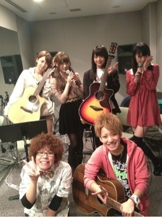
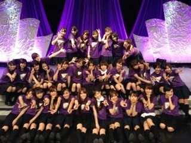
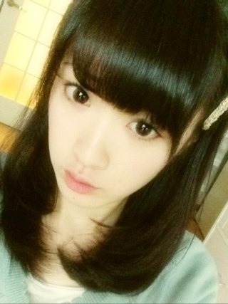
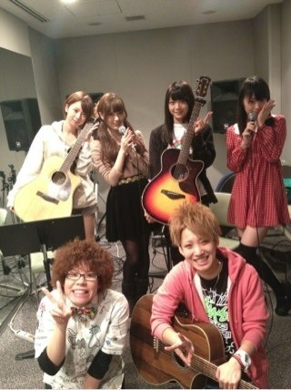
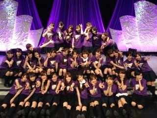
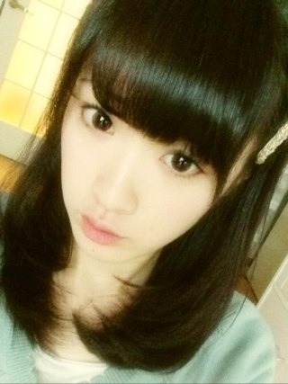

2012/1228Fri（´-`）.｡oO(かずみん×125
こんばんは！
いつも応援ありがとうございます！
昨日はZEPPライブでした♪
やっぱりライブって楽しいわぁ...
久しぶりにぞくぞくできました。
普段ライブで緊張は
しない方なのですが、
今回はMCでの喋りが多かったので
始まる前は不安でお腹が痛かったです。笑
原稿を覚えて喋ることは
いかんせん昔から自信がもてず...
苦手分野ですね。
だからキャプテン玲香は
いつも沢山覚えて喋れてすごいなぁと
思います！
あっ
今回のライブは温かいみなさんの
おかげで、私もちゃんとMCで
喋ることができました！
みなさんポジティブって言ってくれて
ありがとう(T_T)
しかし楽しかったなぁ！
特に偶然を言い訳にしては
久しぶりで超楽しかったです＼(^o^)／
かーずみん、かーずみんというコールが
本当嬉しいの(≧∇≦)
2年前まではハロ紺で
L・O・V・E
ラブリーさゆみー！
っ叫んでた側だったのですが。笑
自分に言われると
こんなに嬉しいんですね*^^*
渋谷ブルースは
ななみん、まいまいが
ギターを弾いてくれました(T_T)
私はちょっと、ほんのちょっと
ギターに挑戦したこと
あるからギターの難しさわかる！
2人ともすごいよ(T_T)ありがとう(T_T)
練習では同じレーベルのひいらぎさんに
教えていただいてました！

優しくてすばらしい方でした(T_T)
練習ではいつも
高山はひどいすっぴん顏で
すみませんでした(>_<;)笑
昨日も観に来てくださいましたよ(T_T)
本当にありがとうございました！！
そうそう、
うちの両親も来てました。笑
初めて来たんですよ！
PARCOは辛くて観てられないと
来なかったのですが、
ライブなので！！
帰りになーちゃん父と
うちの父が意気投合してたのは
笑えました(￣▽￣)
来てくださったみなさん、
本当にありがとうございました！！
来れなかったみなさんも
応援ありがとうございました^ ^

飴と鞭は左上です♪
--------
今日発売日の月刊エンタメに
まいやんと載っています♪
昭和歌謡について語りました！！
よかったら見てみて下さい^ ^
ちなみに今日は前髪をぱっつんめに...

似合わないかしら(^_^;)
それでは、今日はこの辺で( ´ ▽ ` )ﾉ
いつも応援ありがとうございます！
昨日はZEPPライブでした♪
やっぱりライブって楽しいわぁ...
久しぶりにぞくぞくできました。
普段ライブで緊張は
しない方なのですが、
今回はMCでの喋りが多かったので
始まる前は不安でお腹が痛かったです。笑
原稿を覚えて喋ることは
いかんせん昔から自信がもてず...
苦手分野ですね。
だからキャプテン玲香は
いつも沢山覚えて喋れてすごいなぁと
思います！
あっ
今回のライブは温かいみなさんの
おかげで、私もちゃんとMCで
喋ることができました！
みなさんポジティブって言ってくれて
ありがとう(T_T)
しかし楽しかったなぁ！
特に偶然を言い訳にしては
久しぶりで超楽しかったです＼(^o^)／
かーずみん、かーずみんというコールが
本当嬉しいの(≧∇≦)
2年前まではハロ紺で
L・O・V・E
ラブリーさゆみー！
っ叫んでた側だったのですが。笑
自分に言われると
こんなに嬉しいんですね*^^*
渋谷ブルースは
ななみん、まいまいが
ギターを弾いてくれました(T_T)
私はちょっと、ほんのちょっと
ギターに挑戦したこと
あるからギターの難しさわかる！
2人ともすごいよ(T_T)ありがとう(T_T)
練習では同じレーベルのひいらぎさんに
教えていただいてました！

優しくてすばらしい方でした(T_T)
練習ではいつも
高山はひどいすっぴん顏で
すみませんでした(>_<;)笑
昨日も観に来てくださいましたよ(T_T)
本当にありがとうございました！！
そうそう、
うちの両親も来てました。笑
初めて来たんですよ！
PARCOは辛くて観てられないと
来なかったのですが、
ライブなので！！
帰りになーちゃん父と
うちの父が意気投合してたのは
笑えました(￣▽￣)
来てくださったみなさん、
本当にありがとうございました！！
来れなかったみなさんも
応援ありがとうございました^ ^

飴と鞭は左上です♪
--------
今日発売日の月刊エンタメに
まいやんと載っています♪
昭和歌謡について語りました！！
よかったら見てみて下さい^ ^
ちなみに今日は前髪をぱっつんめに...

似合わないかしら(^_^;)
それでは、今日はこの辺で( ´ ▽ ` )ﾉ
2012/12/28 19:36


コメント(404)
zepp最高だったよ！
アメイジング*\(^o^)/*やったら小さくやり返してくれてありがとう！
かずみんかわいいし歌うまいしおもしろいし最高だったよー*\(^o^)/*
握手会行けたら行くから待っててねー！o(｀ω´ )o
かずみんおつかれさま！
ライブ行きたかったな・゜・(つД｀)・゜・
来年もよろしく！
おやすみなさいzzz
渋谷ブルースさいこー！
ライブお疲れ様でした
是非九州でもやってね
選抜発表どうなるのらや
正直怖いわ
どう変わるとかあるいはあんまり変わらないのか....
ポジティブsay！
sayポジティブ！
前髪パッツンかわゆす(^з^)-☆
パッツンめっちゃ似合ってるよ＼(^o^)／
その髪型すきかもー♪( ´▽｀)
ライブ最高ー
昼に行ったよ！
かずみんが
意外にゼロ戦で
見れた！！笑
かなり良かった！！
『渋谷ブルース』泣きそうになった！！
ちなみに、ななみが弾いてるのを見て
コード覚えたから
もう弾けるわ笑
最高のライブありがとう！
ではでは。
明日からも1日頑張りまいやん！！
ライブ、お疲れ様!!
色んな事情があって行けなかった…
1年間、ご苦労様でした!!
来年はもっと成長しないとね!!
へばっまずな(^-^)/~~
Zeppライブお疲れ様(^_^)ﾉ
行きたかったー
絶対に会いに行くんで待ってて下さい(^_^)ゞ
ぱっつんのかずみさんもありだね(^_^)b
かわいいーー
応援してます(´ｰ｀)
ライブお疲れ様です！
髪型似合ってる(*￣∇￣)ノ
かずみんかわいい《*≧∀≦》
来年も握手いきます(^_^)/
貴一(^_^)/
偶然を言い訳にして見たかったな…
かずみんこーるしたかったな(笑)
いけなかったのが悔しい
ライブお疲れ様♪
渋谷ブルース最高です。
ばり感動しましたo(^o^)o
確か花奈ちゃんと肘をこすりあってる写メがあったはず！
パッツン可愛いよ！
めっちゃ似合ってるよ！
私も前髪作ろうかな・・・ｗｗｗｗ
ボスです＼(^o^)／
昼のライブ行ったよ！！！
最高のライブありがとう！！！！！
偶然を言い訳にしてとかめっちゃ良かった＼(^o^)／
かーずみんコールもちろんやってたよ俺も！！
渋谷ブルースは聴いてて泣きそうになった(>_<)
美声やね！
これで大学受験頑張れそうだ！！！！
かずみん( ｀.∀´）y-
らぶりーさゆみんワロタｗｗ
でも道重よりかずみんの方が全然可愛いと思うけどね
お父さん来てたんだ
昨日出番多かったですね
オシカレ
バイバイ
見に行きたかったな
どうでもいいことやけどカキフライを見るとどうしても高山師匠が浮かんでくる
アメージング＼(^o^)／
ライブでひとつになったね(^-^)/
ライブたのしいーっ
またいきたいなぁ‼
ポジティーブ＼(^o^)／
前髪カワイイ！
久しぶりに、コメントしにきました！
昨日、昼と夜ライブ見に行ったよ！
実は渋谷ブルースあんまり好きじゃなかったんだけど、
ライブ見てめっちゃはまりました！！！
聞けば聞くほど大好きになりましたヽ(・∀・)ノ
かずみんの声好きです！！！！
楽しいライブありがとう（~▽~＠）♪♪♪
かずみんの歌とダンスとＭＣ聞きたかったよ
来年はもっといろいろなところで
ライブやってほしいなー
エンタメ読んだよ
記事面白かったよ
昭和のアイドル大好きなんで
いつかかずみんとその話したいなー
楽しんだみたいでよかったよ♪
前髪ぱっつん可愛いよ！
おやすみ。
かずみん昨日はおつかれさま(*^^*)
昼と夜どっちもいったよー！
最高だった♪( ´▽｀)
かずみんのトークも好きだよ(^-^)
まいやんとの渋谷ブルース感動した(/ _ ; )
すごいよかったよー。。
髪型可愛いですよ( ´ ー｀)
はやく全握きてほしいっす(^-^)笑
ほんと昨日は感動をありがと！！
それじゃあまたね(^o^)
ライブお疲れ～
行きたかった泣
見たかった(;つД｀)
いけばよかった(;つД｀)
カタツムリからの偶然を言い訳にしてとかヤバいやん(>_<)
やまちゃんとコールしたかった( ノД`)
次あったら絶対行く
何が何でも行く
まちゅむら見に行く←
ギター弾いたんやね
ギター弾ける人すごいと思うわ
コードわからんしww
あっ！写真可愛いで！
あんまり言ったら怒られる(笑)
ほなねﾉｼ
昨日、本当によかった。
俺は、かずみさんがMVPだと思う。
かずみさんが歌ってる姿、MCしてる姿
本当に輝いてた。
大好きです。
今日は、ゆっくり休んでね。
かずみさんが1番。
大好き。
こんばんわ～＼(^_^)／
アメイジング★
昨日はお疲れさまでした♪
二回とも観ましたよ☆
二回目は前の方だったんで、近くて感動しましたよ(*^▽^)/★*☆♪
やっぱりライブは良いですね～☆
みんな輝いてましたもん♪
握手も好きですが、やっぱりライブだ!!
１月６日の個握はライブ話で、盛り上がりましょう♪
今日はゆっくり休んでくださいねq(^-^q)
でわでわ～
(^_^)/~~
高山さんのMCめっちゃ最高だった‼
アメージング(°_°)
乃木坂には不可欠な存在だね‼(°_°)
行けなかったけど、ちゃんと応援してたよ。
「偶然を言い訳にして」大好きな曲なのでスッゴい聴きたかったなぁ。
来年は乃木坂全国ライブめちゃめちゃ希望です！
前髪パッツン可愛いよ。似合ってる♪
かずみん！
ライブお疲れ様でした。
渋谷ブルース聞きたいなーー！！
かずみん前髪ぱっつんも可愛いね！
初コメかな？
昨夜は、ライブ、夜の会に行きましたよ！
すごく楽しませていただきました
いつもテレビで見る衣装で、なかなか感激。
アメイジングも聞けたし。笑
年末は、ゆっくり休んでね！
俺は昼と夜両方見たよ！！！
LIVE最高だった！！！
俺はかなり前にいたけどかずみんめっちゃ見える場所だったからガン見してた（笑）
ポジティブ叫びすぎて喉痛なった（＾ω＾）
次は6日の握手会の3部に会いに行くからな～
かずみんはどんな髪型でもカワイイね！
サイコーでーーーすっ！！！
ライブお疲れさま（＾Ｏ＾☆♪めっちゃ観に行きたかったなぁ(＞人＜;)
偶然を言い訳にして、はめっちゃ大好きで今も毎日聴いてるよ（＾Ｏ＾☆♪生で聴きたかった♪DVDにならないかな♪
早く年明け握手会行きたい！
かずみんめっちゃ可愛い(((o(*ﾟ▽ﾟ*)o)))
んじゃ明日も一日笑顔で元気にポジティブにガンバろうo(^▽^)o♪
またコメするね～＼(^o^)／バイ
かっ、かーずみぃぃぃん！
ライブお疲れさまでした。
いつものかずみんらしい
優しいブログにホッとさせられてます。
お話してくれてるエピソード
その時にその時の状況や思いも
伝わってきてるんで大丈夫ですからね！
すっぴん顔？（笑）
見える部分でも
素なのも大切ですよー
ぱっつんめな
かずみんもオッケーです。
それではまた。
かずみん こんばんは
zeppライブ おつかれさまー ( ´ ▽ ` )ﾉ
かずみん のMCや
まいまい、ななみん のギター聞いてみたかったぁ (>_<)
かずみん父 と なーちゃん父 意気投合してたんや ！(◎_◎;)
そういう場面を思い浮かべると確かに笑えるね！笑
今年もあと少しだし
一年の締めくくりに相応しいライブになったみたいでよかったね *\(^o^)/*
ぱっつんかずみん もかわいいと思うよ （≧∇≦）
月刊エンタメ探してみるね (=ﾟωﾟ)ﾉ
ポジティブやりましたよ(笑)
今年を締めくくるいいライブになったと僕は思いました!!
渋谷ブルースもめっちゃよかったよ！
バナナマンもいたよ(笑)
かずみんは髪型変えても全部似合ってて可愛い(*^^*)
またコメントしますね！
アメイジングヽ(・∀・)ノ
ものすごく楽しかった
ありがとうございます
マジ楽しかった
ハードスケジュールのなかよく頑張ったね。
ステージで輝いてました
渋谷ブルースマジよかった
あらためてかずみの歌のうまさわかりました
今年デビュー当時から応援できなかったけど、かずみとであえてよかった
ありがとう^^
来年もまたよろしくな
せいや。
Zeppライブ行ったよ♪♪
お疲れさま＞＜
かずみんのMC面白かったし
渋谷ブルースすごくよかった！！
今年は乃木充したヽ(o･ω･o)ﾉ
たくさんの思い出ありがとう！！
ポジティブSay！
ポジティブ～♡♡
さっき渋谷ブルース聴いてました(*´∇｀*)寝る前の癒しで(笑)いつか弾き語りも聴きたいですね
かーずみーん！！
ぜっぷおつかれさま＼( ^o^ )／
いつでもかずみんコール
するよーん( ^ω^ )♡
ねえ、ぱっつんかわいい。
かずみんなにしてもかわいいね♪
こんばんは(*^^*)
ライブお疲れ～(>_<)
渋谷ブルースは
通常版のCDを買ってないので
あまり聞いたことがない(*_*)
なので早く聴いてみたいです(*^^*)
ギターは買ったけど
弾けなくて断念した(笑)
ギター弾ける人かっこいいよねー
ぱっつん似合う！
ではおやすみ～(*^^*)
MCもお疲れ様でした！！
そして、ポジティブとアメイジングの浸透具合
凄いすね（笑）
いい親孝行も出来てよかったですね！
ゆっくり休んでください。
あ、ぱっつん似合ってますよ！
こんばんわ(^-^)/
ライブ行きたかったよ(-_-)
楽しそうだ(^-^)
握手会いくね(^o^)/
5thシングル楽しみだ(*^^*)
かずみん入れるといいね(^-^)v
がんばって♪
ではノシ
もりやまろき☆
コメントする